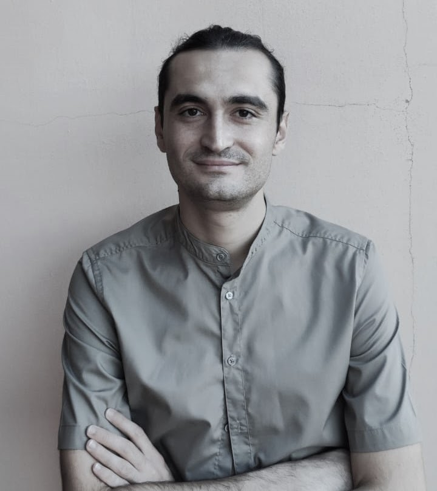

About

E-mail: alessio.carrozzo2@unibo.it
Unibo webpage: University of Bologna profile
Hi there! I am an economist working on political economy, crime economics, and applied microeconometrics. I have held postdoctoral research positions at the University of Turin (Oct 2025–Oct 2026), the University of Pisa (2024–2025), and Sapienza University of Rome (2023–2024).
- My main research interests are Political Economy, Crime Economics, and Health Economics. I have also worked on environmental economics and behavioural epidemiology.
- Combining game-theoretic models and microeconometric methods, I am currently studying: (i) the interplay between mafia-related violence and state responses to crime; (ii) mafia-politics collusion through vote-buying; and (iii) the effects of peacetime military conscription on mental health.
- I obtained my PhD in Economics from the University of Bologna (2019–2024). During my PhD, I was also a visiting researcher at the École Normale Supérieure de Lyon (ENS), hosted by Mathieu Couttenier (Nov–Dec 2022 and Apr–May 2023).